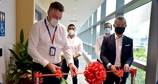

Oral Care, Health Innovations and Designs Singapore (ORCHIDS)
To transform health and life.

The Faculty of Dentistry, National University of Singapore has officially launched ORCHIDS (Oral Care Health Innovations and Designs Singapore), an autonomous research centre that will significantly support the research mission for the development of new concepts and technologies in dentistry that have in-human applications.
ORCHIDS has been established with a well-balanced team of basic and clinician scientists. This team coordinates world-class research programs in the fields of microbiology, nanomaterials, regenerative medicine, 3D printing technologies, and health devices.
According to the Director of ORCHIDS, A/P Vinicius Rosa, “The NUS Faculty of Dentistry is renowned for the high quality of its research. Today, the proportion of its publications in high-tier journals is one of the highest among dental schools in the world. Likewise, our papers receive twice the citations of the global average, which is a hallmark of our impact. With ORCHIDS, we will boost our research programs, catalyse our impact and enhance clinical translation potential.”
The ORCHIDS research agenda focuses on the development of innovative and versatile platforms that will merge biology with computational power to improve oral and systemic health. We will harness the power of Artificial Intelligence to bioengineer symbiotic biofilms for the improvement of oral health. This will eventually impact systemic health through the use of strong computational power for the development of advanced nanomaterials, biochips, 3D/4D-printed technologies and regenerative therapies for personalized care.
The ORCHIDS roadmap is poised to be a pillar of Oral Health-Engineering collaboration on a global scale. Leveraging our demonstrated track record of creating new concepts, innovative technologies and our synergy with Professor Dean Ho, we will develop a forward-looking platform that will give a rapid boost to NUS, NUHS and Singapore’s reputation for innovation in oral health and strengthen Singapore as the location of choice for the development of novel oral and personal care, biofabrication and pharmaceutical therapies in Asia.